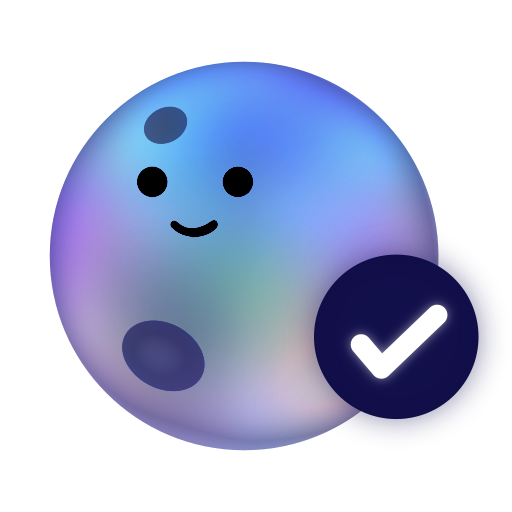
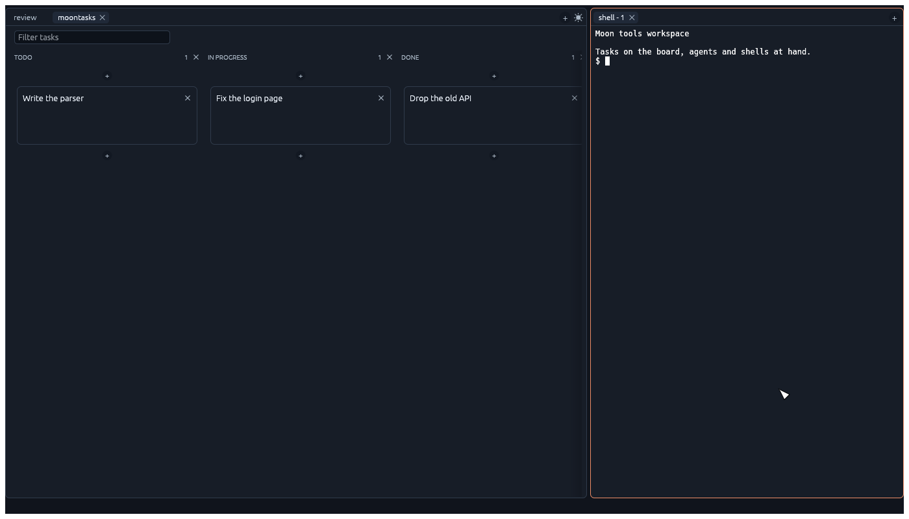
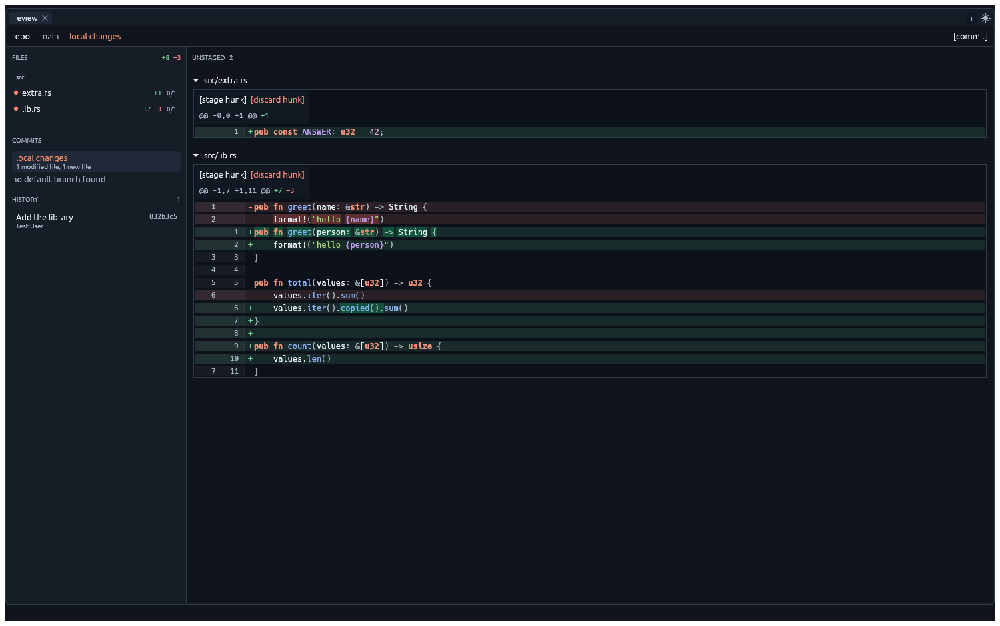

One board for the whole run
See what is queued, active, and done, and watch your progress build. Rename, reorder, add, or remove columns to match your workflow.
Moon dev tools brings task planning, agent workspaces, shells, and code review together in one focused local toolkit.
MoonTask helps you stay focused when working with agents by keeping each task's notes, coding agents, shells, and review in one place.


The idea
A task in MoonTask is a folder in your repo with notes, and the agents and shells started for it stay attached to its card. Move the card as the work moves, and open the diff beside it when it's time to review.
See what is queued, active, and done, and watch your progress build. Rename, reorder, add, or remove columns to match your workflow.
Start, watch, close, and resume agent sessions from the task they belong to.
Shared notes and task state live in your repo, not in a cloud dashboard.
The workflow
Write a card and start your coding agent on it. MoonTask creates a dedicated task folder for its notes and runs.
Open the agent or a shell next to the board. Notes and resources stay on the card.
Open the repo review in place, then move the card through your own workflow when it is ready.

Native performance and memory safety keep every tool fast and reliable.
↗ 02 / INTERFACEeguiAn immediate-mode GUI gives the workspace a responsive native interface without a browser runtime.
↗ 03 / TERMINAL ENGINElibghosttyGhostty's battle-tested VT engine powers terminals, with scrollback, reflow, and links.
↗Modular by design
The core interface pieces are independent, MIT-licensed Rust crates. Use one on its own, or combine them into a complete native workspace.
Explore the sourceegui_framesTabs, splits, and draggable panes with a serializable layout that stays independent of your app's content.
egui_ttyAn egui terminal widget on Ghostty's VT engine, ready for a local PTY, remote socket, or test harness.
egui_moon_editorA focused editor widget with line numbers, search marks, selections, completion, and jump to definition.
Start here
Install the moon dev tools suite: MoonTask, MoonReview, and MoonShell.
curl -fsSL https://raw.githubusercontent.com/antoineMoPa/moon-dev-tools/main/install.sh | sh
Then open a git repository and run moontasks.